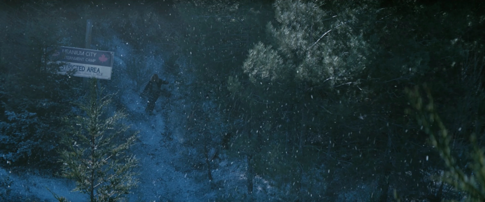

ウラニウム・シティ強制収容所
TVシリーズ ロケーション
LOCATION DATA

The Uranium City Internment Camp is a location {{in|FOTV}}.
Background
Before the U.S. Marines, were used in controlling the population of the camp.At some point, a mass escape occurred at the camp, seemingly due to an attack by Canadian partisans.
In the TV series
The Handoff
her mother escape from the internment camp along with other Canadians. They are chased by guards who fire at them. Steph and her mother are discovered by a Vertibird and a Marine in power armor who tells them to return to the camp or he will shoot, while using the slur "Hoser" to describe them. Before either party can react, a suicide bomber kills the soldier, although Steph's mother is mortally wounded. She tells Steph to get south and survive, while telling her not to worry if she harms anyone to do so, as she shouldn't think of them as human beings, but Americans.Appearances
The Uranium City Internment Camp appears only {{In|FOTV}} episode "The Handoff."Behind the scenes
Uranium City is a real-world community in northern Saskatchewan, Canada. It was originally founded in the 1950s to house workers of nearby uranium mines.Category:Fallout TV series locations ru:Урановый город
Impression
（準備中）
（準備中）